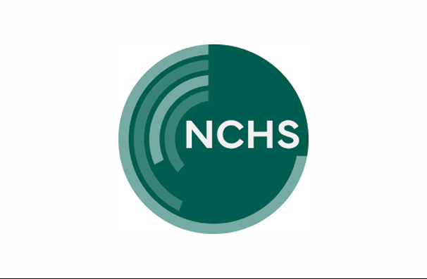
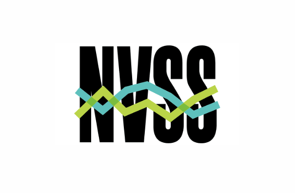
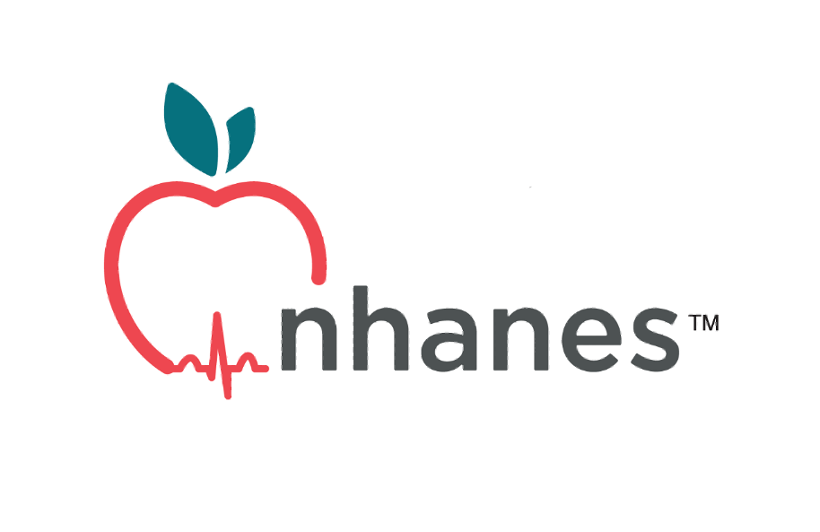
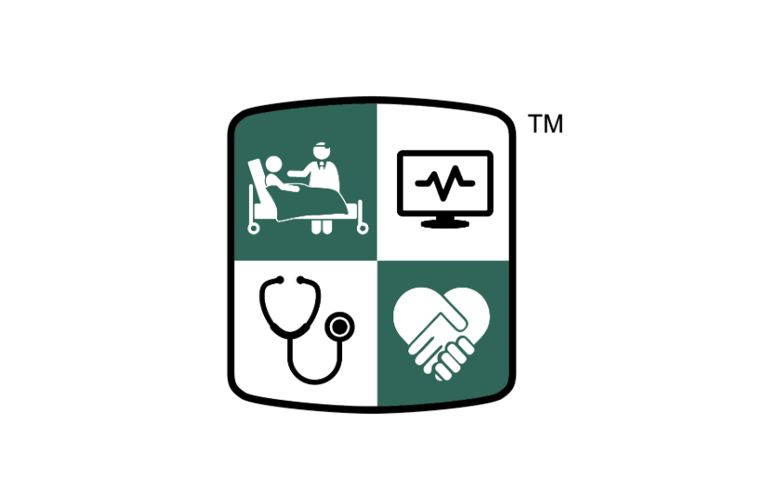
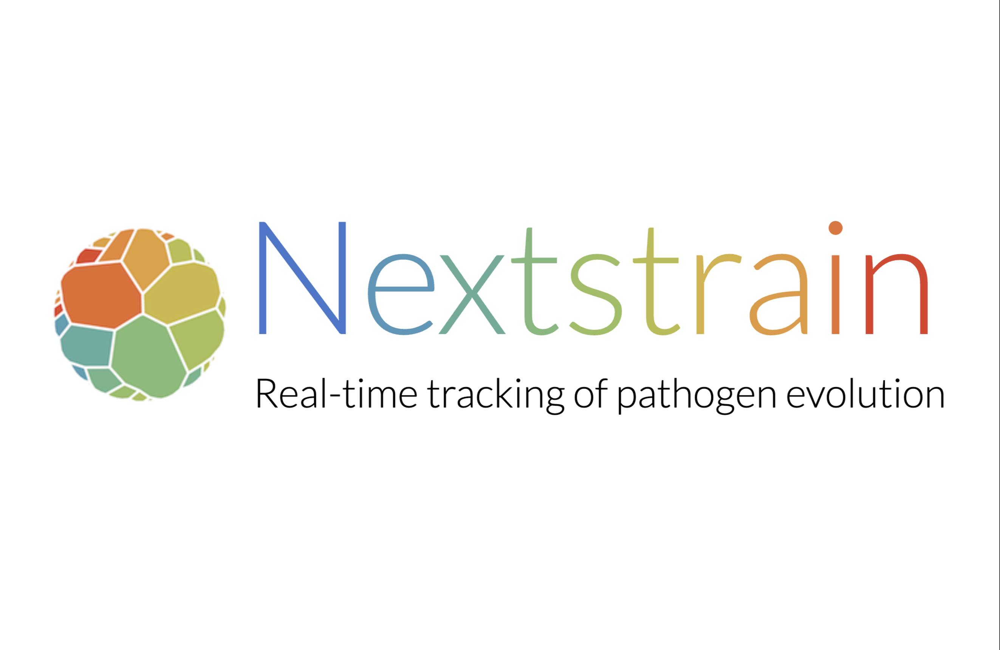

The Health Attribution Library
The Health Attribution Library is a curated collection of scientific publications that conduct rigorous end-to-end attribution studies linking human-caused climate change to specific health impacts. Created in 2023 through Wellcome Trust-funded research that found only 13 qualifying studies among nearly 4,000 reviewed papers, the library serves as an ongoing resource to support scientific research, journalism, litigation, and policy work requiring evidence-based attribution of health impacts to climate change.
Worldwide Index of Serotype Specific Pneumococcal Antibody Responses (WISSPAR)
The Worldwide Index of Serotype Specific Pneumococcal Antibody Responses (WISSPAR) is a searchable database launched in 2023 by Yale researchers to aggregate immunogenicity data from pneumococcal vaccine clinical trials. WISSPAR enables researchers and regulators to quickly access and visualize serotype-specific immune response data through search and filtering tools, supporting comparative efficacy research and evidence-based decision making for pneumococcal conjugate vaccine development.
Yale University Open Data Access (YODA)
The Yale University Open Data Access (YODA) Project at Yale's School of Medicine was founded in 2013 to facilitate responsible sharing of clinical trial data. As an independent academic organization, YODA approves external researchers' access to participant-level clinical trial data from Data Partners (manufacturers, academic researchers, and government funders). It currently lists over 500 available trials across mental health, cancer, autoimmune diseases, infectious diseases, metabolic disorders, and cardiovascular conditions. The project provides de-identified data that meets HIPAA and EU privacy standards and has enabled hundreds of publications working to advance patient health and scientific knowledge.

Yale New Haven Health System (YNHHS) Epic
The Yale New Haven Hospital System (YNHHS) uses Epic's EMR system to digitize comprehensive patient data across its network, supporting various medical services. Annually, they manage around 150,000 inpatient visits, 3.5 to 4 million outpatient encounters, and 350,000 emergency department visits. Epic Cosmos integrates these records into a single, HIPAA-compliant longitudinal patient record, enhancing privacy by eliminating duplicates and obscuring identifiable information.

NCHS's Rapid Surveys System
The Rapid Surveys System (RSS) is a time-sensitive data collection platform launched by the National Center for Health Statistics in 2022 to quickly gather actionable health data on emerging concerns. RSS leverages commercially available probability-based online panels, recruiting approximately 4,000 adults per round through AmeriSpeak and KnowledgePanel using address-based sampling methods. While prioritizing speed and flexibility over traditional survey precision, RSS provides nationally representative estimates to support real-time evidence-based public health decision making.

National Center for Health Statistics (NCHS)
The National Center for Health Statistics (NCHS) collects and disseminates data to provide a comprehensive understanding of health and healthcare in the United States. The data includes birth and death records, medical records, interviews, physical examinations, and laboratory testing, and is accessible through reports, dashboards, and data files to identify health problems, develop policies, and monitor health trends.

NCHS's National Vital Statistics System (NVSS)
The National Vital Statistics System (NVSS) is managed by NCHS and has been collecting vital records data since 1946. The system gathers national data on births, deaths, fetal deaths, marriages, and divorces from 57 U.S. registration areas, then standardizes these vital statistics to support public health research and policy-making. NVSS also conducts specialized surveys and data linkage projects to address specific health concerns.
NCHS's National Health Interview Survey (NHIS)
The National Health Interview Survey (NHIS) is the nation's oldest continuously running health survey, established in 1957 to collect comprehensive health data from the U.S. civilian population. Conducted annually by the National Center for Health Statistics, NHIS provides nationally representative data on health trends, illness, disability, and healthcare utilization through face-to-face household interviews. The survey adapts over time to address emerging health topics and offers linked datasets to researchers through the Research Data Center.

NCHS's National Health and Nutrition Examination Survey (NHANES)
The National Health and Nutrition Examination Survey (NHANES) collects data about the health of adults and children in the United States. This data has driven changes in medical treatment practices and public policy supporting good health . Since its inception in 1959, NHANES has completed eight distinct iterations of the survey, with the latest being conducted as an ongoing surveillance program. These efforts have led to the creation of four special focus programs or ancillary studies.
Researchers can access both publicly available and restricted data produced by NHANES from all survey installments. Moreover, researchers have the opportunity to request biospecimens collected during some surveys, allowing for the generation of additional data points that enhance the research community's resources.

NCHS's Data Linkage
Since the 1980s, the National Center for Health Statistics (NCHS) Data Linkage program has combined NCHS survey data with administrative sources from Medicare, Medicaid, National Death Index, and Social Security records, supporting over 1,000 peer-reviewed publications. The program maximizes resource efficiency by using state-of-the-art data science matching techniques to link existing data, avoiding costly re-collection efforts. While most program resources require restrictive-access permissions to ensure participant privacy, the program takes every opportunity to make publicly available versions, including through innovative synthetic data generation.
Surveillance, Epidemiology, and End Results Program (SEER)
The Surveillance, Epidemiology, and End Results (SEER) Program provides information on cancer statistics in an effort to reduce the cancer burden among the U.S. population. SEER is supported by the Surveillance Research Program (SRP) in NCI's Division of Cancer Control and Population Sciences (DCCPS).

NCHS's The National Health Care Survey (NHCS)
The National Hospital Care Surveys (NHCS) collect and disseminate data to provide comprehensive understanding of hospital healthcare services in the United States through five active surveys. The data across all programs include patient demographics, diagnoses, treatments, procedures, and outcomes from emergency departments, inpatient units, office-based providers, health centers, and residential care communities. Data are accessible through reports, freely accessible files, and restricted access files and can be used to inform health policy decisions, monitor care quality, examine healthcare disparities, and more.

National Institutes of Health's (NIH) All of Us (AOU)
The All of Us (AoU) initiative, overseen by the National Institutes of Health (NIH), is a precision medicine program that connects researchers, healthcare providers, technology experts, community partners, and the public. It aims to gather longitudinal data from diverse participants to create effective individualized treatments. Currently, around 600,000 participants have contributed electronic health records (EHR), completed surveys, provided physical measurements, and donated biospecimens.
All of Us' one-of-a-kind dataset is stored on the Researcher Workbench, a secure, cloud-based platform where registered researchers can access data from surveys, genomic analyses, EHRs, physical measurements, and wearable devices. The data collected include standardized EHRs, biosamples for genomic sequencing, surveys on demographics and health behaviors, physical measurements, and health tracking data from wearable devices, with additional data contributed by partnered research studies.

data.gov
Data.gov is the U.S. federal government's official open data website, launched in 2009 to enhance government transparency and accountability by providing free public access to federal datasets. Operating under the OPEN Government Data Act of 2018, it mandates federal agencies to publish their data online in standardized, machine-readable formats. The platform, maintained by the General Services Administration (GSA), also collaborates with state, local, and international sources to create a comprehensive data catalog. Its open-source foundation enables adaptation by governments worldwide, with the source code available on the GSA's GitHub repository.

UK Biobank
The UK Biobank Data Showcase provides a summary of all the information gathered by UK Biobank on our 500,000 participants and is available to explore. Not only does this contain background information on how these data were collected, it also includes notes about future collections. Before applying to access UK Biobank data, or if you are already accessing data, please keep up to date by checking the notes and additional resources provided with categories and data-fields for useful information. Please note: data is only accessible through our Research Analysis Platform.

Epic Cosmos
Cosmos compiles Epic electronic medical record (EMR) data from nearly 2,000 participating hospitals globally, creating a comprehensive dataset with analytical tools like SlicerDicer and the Data Science Virtual Machine (DSVM) to advance medical research. This network encompasses half a million physicians caring for 300 million patients, generating billions of high-quality, longitudinal clinical data points. Cosmos integrates and de-identifies patient records to create unified longitudinal profiles while eliminating duplicates.
Merative's MarketScan
Merative advances health and social care by providing innovative healthcare data and technology solutions, collaborating with thousands of providers and major organizations. Their MarketScan Research Databases offer longitudinal, patient-level data on healthcare costs and outcomes, supporting diverse research applications with data from over 273 million patients and more than 2,600 peer-reviewed publications. MarketScan's detailed and HIPAA-compliant data enhance research across disease areas, backed by powerful analytic tools.
At Yale, the MarketScan database is licensed for research use by the Yale Biomedical Informatics and Computing (YBIC) office, with support from the Harvey Cushing/John Hay Whitney Medical Library and the Yale Center for Clinical Investigation. Yale researchers can access and analyze MarketScan data by submitting a request form for assistance from the YBIC team.

Claude D. Pepper Older Americans Independence Center (OAIC)
The Claude D. Pepper Older Americans Independence Centers (OAIC) Program is a network of 15 NIA-funded research centers established in 1991 to promote health and independence in older Americans. The OAIC Coordinating Center manages study registration, data access, and connects researchers with funding opportunities. Each center has its own research focus; Yale's Center focuses on multifactorial geriatric conditions and multimorbidity.

Nextstrain
Nextstrain offers real-time dashboards for tracking viral diseases such as influenza, Zika, and Ebola. The platform supports both community-developed and internally-maintained dashboards for a range of pathogens. Utilizing an open-source, reproducible bioinformatics pipeline, Nextstrain integrates data from repositories like the National Center for Biotechnology Information (NCBI) and the Global Initiative on Sharing All Influenza Data (GISAID) to assist researchers and policymakers in making informed epidemiological decisions. Its suite of tools, including Augur and Auspice, enables robust, reproducible phylogenetic analysis and visualization, facilitating the rapid and comprehensive dissemination of results.

Beyond the Collection: Faculty Data Applications & Resources
This page showcases additional data applications and harmonization efforts from Yale University faculty. We hope these examples will inspire new research pathways within the research community and help broaden awareness of valuable resources beyond those in our actively curated collection. To learn more about any dataset or resource listed here, we encourage you to contact the primary investigator noted in the publication.